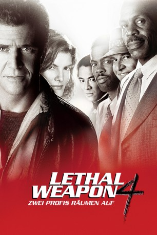
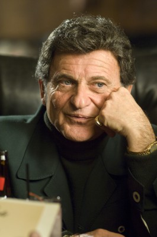
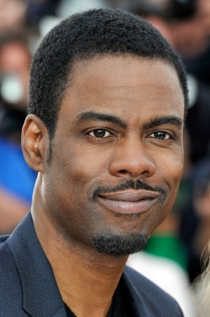
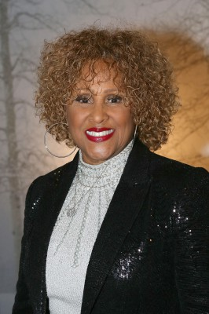
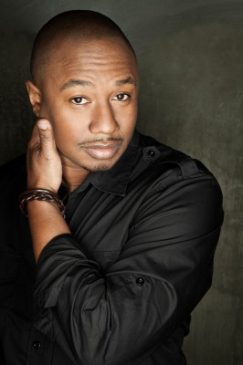
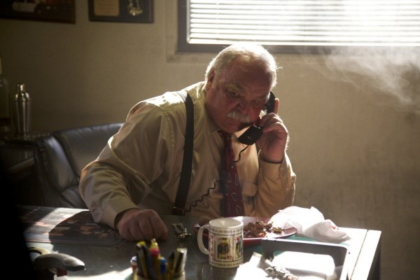
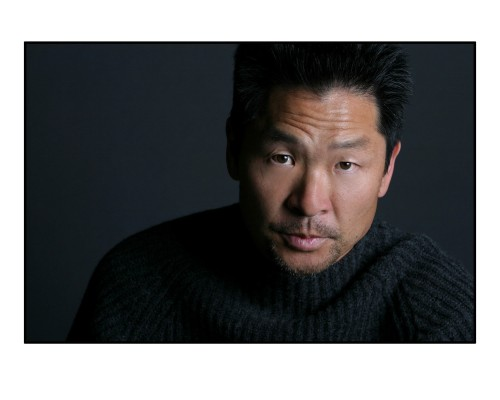
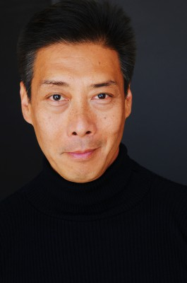
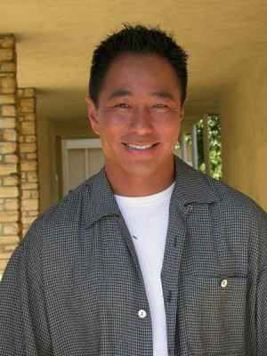
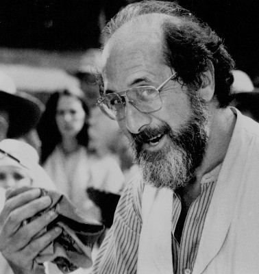

#316 Lethal Weapon 4 - Zwei Profis räumen auf
Alternativ: Lethal Weapon 4
 
 IMDB-Wertung: 6.6 / 10
IMDB-Wertung: 6.6 / 10  Metascore: 37
Metascore: 37 
Sechs Jahre sind seit dem letzten großen Fall der Polizisten Murtaugh und Riggs vergangen. Nun, da Murtaugh Großvater und Riggs Vater werden, beschließen sie kürzer zu treten. Doch bei einem Angelausflug mit ihrem Freund, dem Privatdetektiv Leo Getz, geraten sie in eine Schießerei mit einem Schiff, das chinesische Einwanderer ins Land schmuggelt. Der Ärger mit den chinesischen Triaden und insbesondere deren jungen Prinz lässt nicht lange auf sich warten. Und zu allem Überfluss müssen sie sich auch noch mit dem Nachwuchs-Cop Lee Butters rumschlagen.
Jahr: 1998
Dauer: 127 Minuten
FSK: 18
Land: USA Studio: Warner Bros.Tonspuren: DD5.1 - ,
Untertitel: Deutsch, Englisch,
Auflösung: 1080p (1920×802) Größe: 13824 MB
Genre: Action, Krimi, Thriller
Regisseur:  Richard Donner
Richard Donner
Drehbuch: Shane Black, Jonathan Lemkin, Alfred Gough, Miles Millar, Channing Gibson
Soundtrack: Eric Clapton, Michael Kamen, David Sanborn
Darsteller:
 Mel Gibson als Martin Riggs
Mel Gibson als Martin Riggs Danny Glover als Roger Murtaugh
Danny Glover als Roger Murtaugh-  Joe Pesci als Leo Getz
- Rene Russo als Lorna Cole
-  Chris Rock als Detective Lee Butters
 Jet Li als Wah Sing Ku
Jet Li als Wah Sing Ku Kim Chan als Benny 'Uncle Benny' Chan
Kim Chan als Benny 'Uncle Benny' Chan-  Darlene Love als Trish Murtaugh
- Traci Wolfe als Rianne Murtaugh Butters
 Jack Kehler als State Department Man
Jack Kehler als State Department Man-  Damon Hines als Nick Murtaugh
- Mary Ellen Trainor als Dr. Stephanie Woods
- Tony Keyes als Ng's Partner
-  Richard Riehle als INS Agent
 Roger Yuan als Chu
Roger Yuan als Chu-  Simon Rhee als Thug
- Danny Arroyo als Gomez
 Raymond Ma als Dr. Cheng
Raymond Ma als Dr. Cheng Elizabeth Sung als Hong's Wife
Elizabeth Sung als Hong's Wife- Jessica Jann als Little Girl
 James Lew als Freighter's Captain
James Lew als Freighter's Captain-  François Chau als Four Father Li Lum Chung
 Stephen Liska als Detective
Stephen Liska als Detective- Roland Kickinger als Detective
- Benjamin King als Detective
 Al Sapienza als Detective
Al Sapienza als Detective- Jamie Donovan als Detective
- Jeanne Chinn als Ping's Mother
- Ray Chang als Ping's Father
- Ryan C. Benson als Construction Worker #1
- Daniel Getzoff als Construction Worker #2
 Dana Lee als General
Dana Lee als General George Cheung als Fan
George Cheung als Fan Marian Collier als Maternity Worker
Marian Collier als Maternity Worker- Barret Swatek als Nurse
- Larkin Campbell als Patrolman
 Rick Hoffman als Police Officer at Port
Rick Hoffman als Police Officer at Port Stephen Blackehart als Police Sergeant , uncredited
Stephen Blackehart als Police Sergeant , uncredited-  Al Goto als General's Men , uncredited
 Gilley Grey als Firefighter , uncredited
Gilley Grey als Firefighter , uncredited Phil Hawn als Businessman , uncredited
Phil Hawn als Businessman , uncredited- Victoria Horn als Hospital Girl , uncredited
 Bob Jennings als Sheriff #1 , uncredited
Bob Jennings als Sheriff #1 , uncredited Al Leong als Wah Sing Ku Triad Member , uncredited
Al Leong als Wah Sing Ku Triad Member , uncredited- Michael Li als Waiter / PRC , uncredited
-  Richard Libertini als Rabbi Gelb , uncredited
 Steve Kahan als Captain Ed Murphy
Steve Kahan als Captain Ed Murphy- Eddy Ko als Hong, Chinese Refugee
- Calvin Jung als Detective Ng
- Ebonie Smith als Carrie Murtaugh
Datei: X:\FSK18-Collections\Lethal Weapon\Lethal Weapon 4 - Zwei Profis räumen auf (1998, FSK18, 1920x802).mkv seit 16.02.2015
Festplatte: FSK18
 Es gibt insgesamt 7 Filme in der Gruppe 'FSK18-Collections\Lethal Weapon'
Es gibt insgesamt 7 Filme in der Gruppe 'FSK18-Collections\Lethal Weapon'